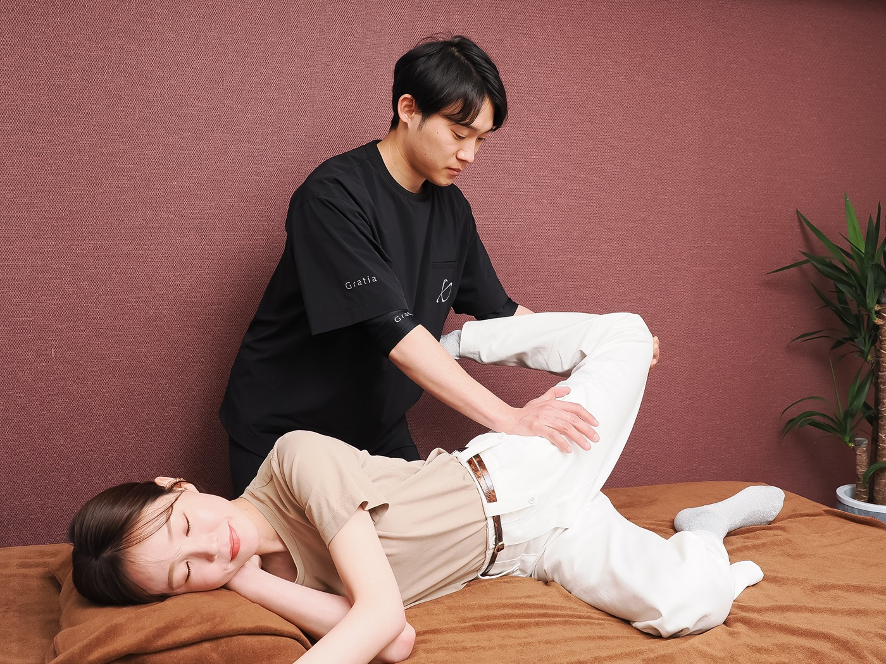

期間限定・完全無料
「もう、年だから」を
手放しませんか。
7日間で、体の見方が変わります。
あなたの「最後のダイエット」を、
今ここから始めましょう。
登録後すぐに7ステップが届きます
1分で完了・いつでも解除OK

RESULTS
同じ40-50代の女性たちが、
本当に体を変えました。

「お腹まわりが目に見えて変わって、洋服選びが楽しくなりました」

「もう自分には無理と思っていたのに、3ヶ月で別人みたい」

「リバウンドの繰り返しから、ようやく抜け出せました」

「諦めていた体重が動いて、自分に自信が戻りました」

「年齢のせいじゃないと分かって、毎日が前向きになりました」
※個人差があります。
ABOUT YOU
一つでも当てはまったら、
このページを最後まで読んでください。
「あんなに頑張ったのに、また戻った」
その繰り返しが、もう辛い
食べる量を減らしても、
お腹まわりだけ落ちない
鏡を見て「これが自分？」と
感じる瞬間がある
朝、顔がパンパンに
むくんでいる
疲れやすくて、運動を始めても
3日坊主になる
「もう年だから」と
諦めかけている
大丈夫です。
それは「意志の弱さ」でも「年齢のせい」でもありません。
体の仕組みに合った正しい方法を知れば、40代・50代からでも、ここから変われます。
WHY
40代・50代で痩せにくいのは、
体の仕組みが3つ同時に変化しているから。
まずは「敵」を知ることから始めましょう。
POINT 01

40代後半から女性ホルモン（エストロゲン）が急激に減ります。エストロゲンには脂肪の蓄積を抑える働きがあるため、減少するとお腹まわり・背中・二の腕に脂肪がつきやすくなります。
「若い頃と同じ食事量でも太る」のは、意志の弱さではなくホルモンの仕業。だから根性論で解決しません。
POINT 02
40-50代になると、筋肉量が落ち 1日に消費するカロリーが20代より約200kcalも少なくなります。これはおにぎり1個分。同じ食事量でも自然に太る計算です。
無理な食事制限より、少ない筋肉を効率よく使うことが正解。短時間でできる方法があります。
POINT 03

長年の生活習慣で骨盤が開き、内臓が下がると、ぽっこりお腹・反り腰・太もも太りの原因に。脂肪を落としても姿勢が悪いと痩せて見えないのはこのため。
整体の視点で土台を整えると、同じ体重でも見た目が大きく変わります。
CAUTION
40-50代がやりがちな 3つの落とし穴
一時的に体重は落ちます。でも、ホルモンと代謝はさらに低下し、戻った瞬間に前より太る体に。
40代以降は関節や腰を痛めやすい時期。続かない・ケガで挫折・結果が見えない、の三重苦に。
体の仕組みが変わっているのに、方法を変えていない。これが、リバウンドの最大の原因です。
つまり、必要なのは「もっと頑張ること」ではなく、
年齢に合った、正しい方法に切り替えること。
SOLUTION
我慢ゼロで、無理なく続く。
本当に痩せる、年齢に合った方法です。
STEP 01
巡り・姿勢・骨盤のリセット
STEP 02
最小限の筋肉刺激で代謝アップ

STEP 03
食事と習慣を「整える」
MESSAGE

嶋田 光希
明石市 整体院誠天 院長
私はもともと 理学療法士として病院で勤務 し、その後、明石市で 整体院誠天 を開業しました。
腰痛・膝痛・姿勢の崩れに悩む方を施術する中で、特に40代・50代の女性が抱える 共通の悩み に気づいたのです。
「昔より体重が増えてから膝がつらい」
「お腹まわりが気になって姿勢も悪くなった」
「体が重くて動くのがしんどい」
体重が増える → 関節が痛む → 動きたくない → さらに太る。
そんな悪循環に悩む方を、何人も見てきました。
整体で身体を整えることは大切です。でも、根本にある 「体重」と「食生活」 を変えなければ、また同じ悩みを繰り返してしまう。
そう感じて、ダイエットサポートを始めました。
無理な食事制限やきつい運動ではなく、
3食しっかり食べながら身体の土台から整える 方法を大切にしています。
40代・50代からでも、身体は変わります。
「年齢のせい」と諦めかけているあなたに、もう一度希望を持ってほしい。
あなたの「最後のダイエット」を、心からサポートさせてください。
OFFER
通常 29,800円相当 の内容を、
期間限定で完全無料でお届けします。
40代から痩せない3つの原因と、あなたに必要な切り替え方
骨盤と背骨を整える、寝る前5分のセルフケア
巡りを変える朝のルーティン。むくみ解消で見た目も軽く
「禁止」ではなく「整える」食事術。続けられる選び方
体重を維持できる、生活への落とし込み方
太りやすい一日のクセを発見し、整える
3ヶ月で体を変えるための、あなた専用ロードマップ
さらに、登録者全員に
Q&A
はい、完全に無料です。LINE登録のみで、追加費用やクレジットカード登録は一切ありません。
ありません。「食べない」のではなく「整える」アプローチです。我慢せず、続けられることを大切にしています。
はい、大丈夫です。1日5分、椅子に座ってもできる内容からお伝えします。関節に負担をかけません。
もちろんです。受講生には60代の方も多く、しっかり結果を出されています。年齢に合わせた内容なのでご安心ください。
1週間で1kg程度の変化を実感される方が多いです。3ヶ月続けると、体型に明確な変化が出てきます。
はい、ワンタップで解除可能です。気軽に始めて、合わなければいつでも辞められます。
期間限定・完全無料
7日間で、体の見方が変わります。
あなたの「最後のダイエット」を、
今ここから始めましょう。
登録後すぐに7ステップが届きます
1分で完了・いつでも解除OK
P.S.
これまで何度もダイエットに挫折してきたあなたへ。
このメソッドは、40代・50代の女性のためだけに作りました。
「もう年だから」と諦める前に、まずはこの7ステップを試してください。
たった1分の登録で、
あなたの体の見方が変わります。
— 整体院誠天 院長 嶋田 光希